All graphs herein are the work, property, and copyright of Dr. Michael Levitt of Stanford University. Contributers to the underlying works are Franceso Zonta and Andrea Scaiewicz. All quotes are Dr. Michael Levitt's direct from the linked Tweet of his Twitter account or picture captions. All other notes are my own.
DATA SOURCES
Excess deaths of individual countries and US states
recent Gompertz Best Line Fit charts in Google Sheets and apps :
Levitt1:
 : Prediction app for countries, states and regions :
====
: Prediction app for countries, states and regions :
====
2 July 2021: "1a) Gompertz is seen in almost all first Outbreaks. The tell-tale signal of Gorrpertz growth in linear downward trend of J(t)=ln[H(t)], where H(t) is exponential growth factor. Most countries show Gompertz at start. Exceptions India, Japan, Argentina, South Africa. Ideas?" from previously pinned: TWEET
NOTE: caption: "35 Countries Arranged in Order of Decreasing Population ; 2 week gridlines from 23 Jan 2020 to Jul 2020 (210 days)"
4 Countries have poor fits: South Africa, India, Japan and Argentina
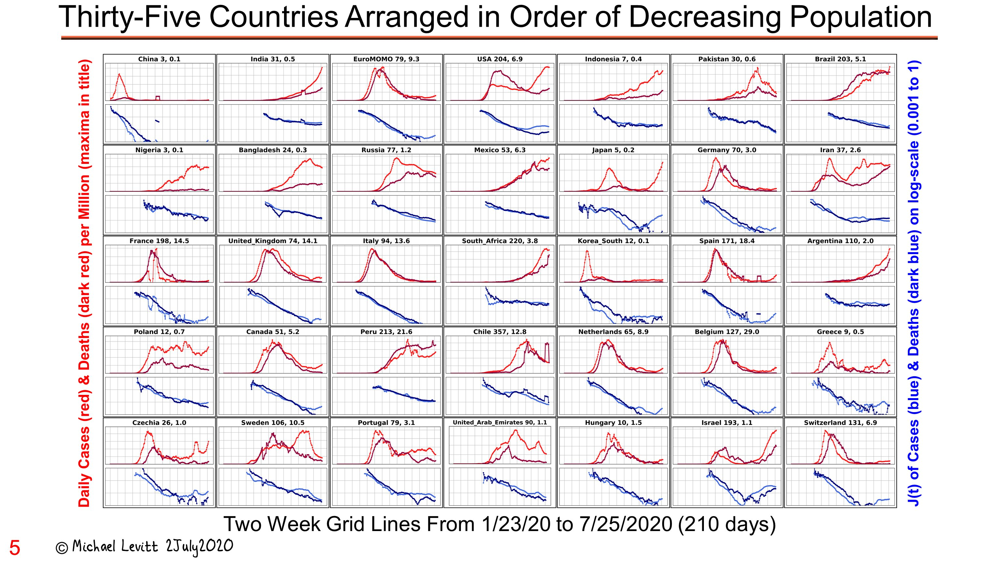4 Countries Don't fit the Gompertz curve well: South Africa, India, Japan and Argentina
Covid cases, deaths per million: South Africa : 220 , 5.1 ; India: 69 , 0.9 ; Japan : 11 , 0.2 ; Argentina: 251 , 6.8
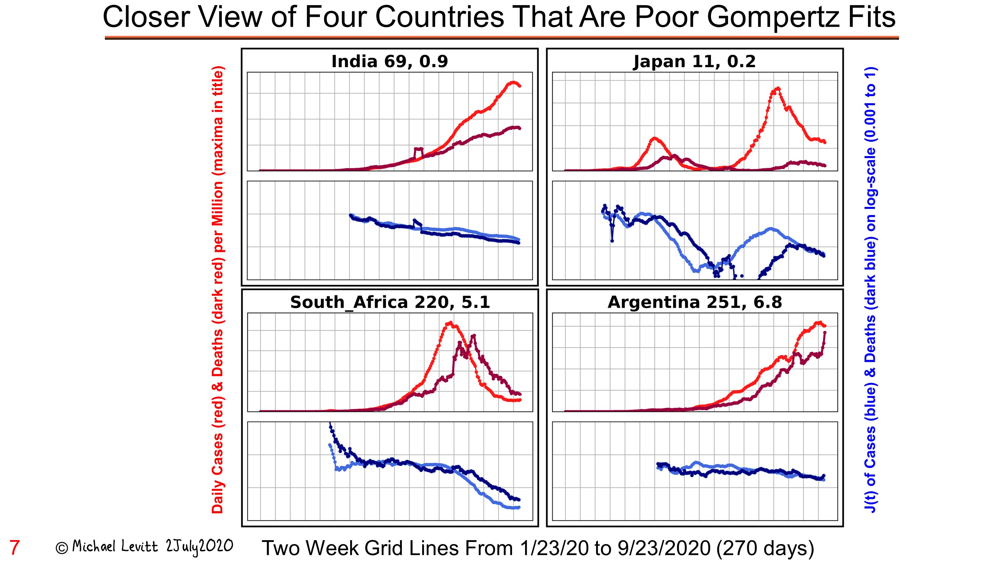2 July 2021: " 1b) Gompertz is Only Growth Function Where Growth is Driven by a Straight Line. Shows that J(t) dropping linearly from the very beginning is not expected from any other growth function than the Gompertz Function. Gompertz fastest at start: just like a bullet but not a rocket. "
CAPTION : "Gompertz: X(t)=G(t)=Nexp[-exp[-(t-T)/U]]
Parameter N is maximum platau value X(t) reaches when at large time, t.
Parameter T is the point of inflection, the time when the 2nd derivative of X(t) is 0 and its 1st derivative is a maximum at ( t=T , X(T)=N/e=0.37N
NOTE ON ABOVE: T is the highest point of the peak of the second derivative ; T is 37% of N, so at that point at 37% of the cases or deaths that will occur
Parameter U is a time constant which changes the shape of the curve The function X(t) or G(t)has the expected shape of saturating growth function Normalizing X(t) by dividing by N and taking the (natural) logarithm gives ln[X(t)/N]=exp[-(t-T)/U] which increases rapidly and then curves smoothly to become hostizontal at saturation
The function : Z(t)= ln[ln[N/X(t)]]= -(t-T)/U is defined by taking the logarithm again.
If we know the actual value of N, then Z(t) is a linear function of t. As N is not known until the epidemic is over, we try different N values to find the value that makes Z(t) the best straight line with the highest correlation coefficient (CC) with t. How we do this is shown by the curved dashed continuations of the red line. Once we have N for the best line, the slope 1/U and T is time, t, when Z(t) =0
The function : J(t)= ln[ln[X(t)/(X(t-1)]] is also a linear function of time, t. It has the slope of 1/U and intercept of T/U+ln[1-exp(1/U)], from which determine T and then N. The J(t) method compliments the Z(t) method and we use both. "
from : TWEET
NOTE: The main point about a bullet and a rocket is this: a bullet's energy source is applied when it released, from that point onward it has no source of energy; a rocket carries it's energy source with it, it's energy supply is always there until the source runs out.
Prediction by Z(t) and J(t) Methods are Based on Straight Lines
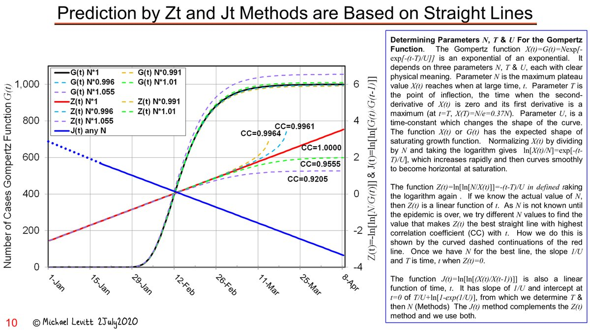The Exponential Growth Factor H(t) is different for Gompertz and Logistic Growth
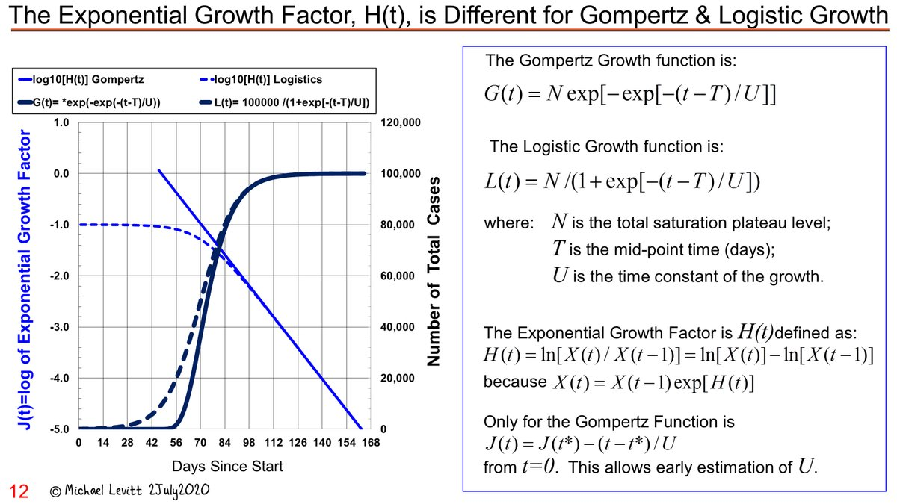Jul 3 " 1c) Exponential Growth Factor of Gompertz is Sensitive to Artifacts of Added Numbers at Start. Shown in (pre-print in medrxiv of underlying work) stressed by @PienaarJm , all growth functions have linear decreasing J(t) for large t. Gompertz has linear J(t) for small t. Artifacts here are key."
from : TWEET
The Exponential Growth Factor of Gompertz is Sensitive to Initial Value of Total Counts
from TWEET: JULY 2021:
"OVERLAPPING PERFECT GOMPERTZ FUNCTIONS CAUSES SURPRISING CHANGES:
From Caption of pic: " Two indentical Gompertz functions are added together, which is just what would happen for two totally independent outbreaks in the same country. The total number of Daily Cases is a simple sum of the Daily Cases from each outbreak.
The log of Exponential Growth Factor, J(t), is very different from the sum of J(t) of each curve. It can appear to show exponential growth, where J(t) is level with time, or even super-exponential growth, where J(t) increases with time. This is an artifact as the exponential growth factor for each outbreak is always slowing down as expected from a Gompertz function.
Both G(t) Functions have the same N and U the value of T changes by delta T.
Both G(t) Functions have the same U, but N of 2nd is 3x greater; the value of T changes by delta T."
(my NOTE: N is final plateau of cumulative cases or deaths, U is time constants ("the inverse slope of the lines or time-constant of decay") T is time of peak; U=duration of outbreak)
(my NOTE: N=platau and U=duration of outbreak)
NOTE:In the pic below, red lines are G(t) in it's second derivative form, blue line are J(t)

EFFECT of ADDING DATA DUMP DEATHS : NYC and HUBEI
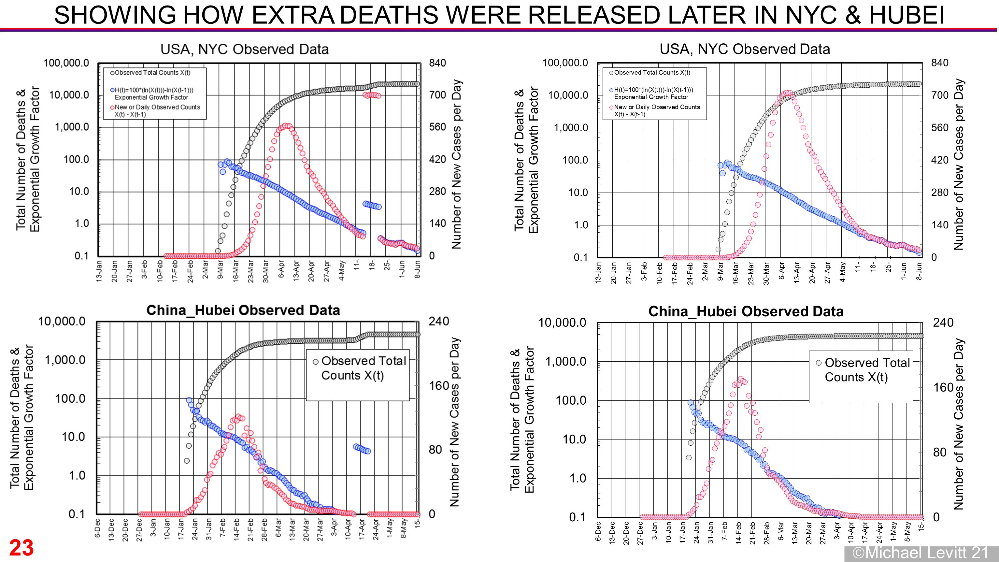

Lombardy First Outbreak by Jt and Zt Method
Jul 3 2021 “Quick reply using non-Excel plots made last week. Predictions that fit lines to Jt seem OK after 13-Mar-20. By 27-Mar-20 clear trend. This extrapolation method was not discovered till after preprint submitted in Jun-20. Zt method is less close.” from TWEET
UK Cases and Deaths Gompertz Fitted to 6 (case) and 4 (Death) Waves
Aug 24: Replying to @b1daly " Hard to decompose multiple outbreaks. Sum of several Gompertz outbreaks with different U values does not look Gompertz. I use Excel to do this for a few dozen locations. Fit is good but tedious & slow. Really need a better data analyst & coder than me to help automate."
from TWEET
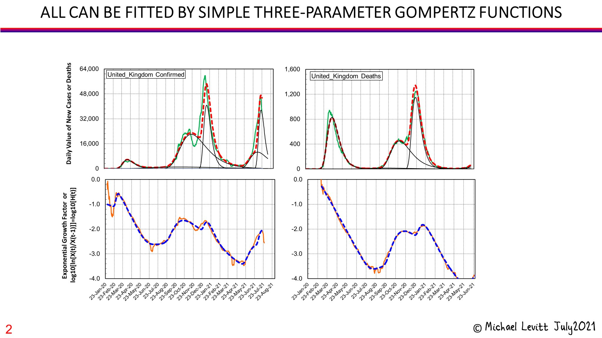LOMBARDY, ITALY
Deaths and Cases Gompertz Fitted to 4 waves
“Complete epidemic in Lombardy has 4 or 5 distinct outbreaks. In fitting, the midpoint of the the death Gompertz function is a fixed number of days after the corresponding cases Gompertz function. Fit to 7-day rolling average is more revealing than to raw data, hence 5 peaks. “ from TWEET: 30 Jun SEE also 25 JUN 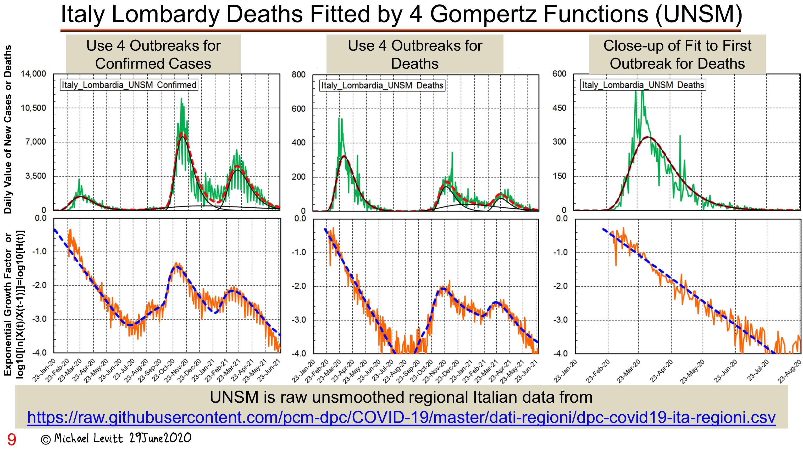
??? Deaths and Cases Gompertz Fitted to 4 waves
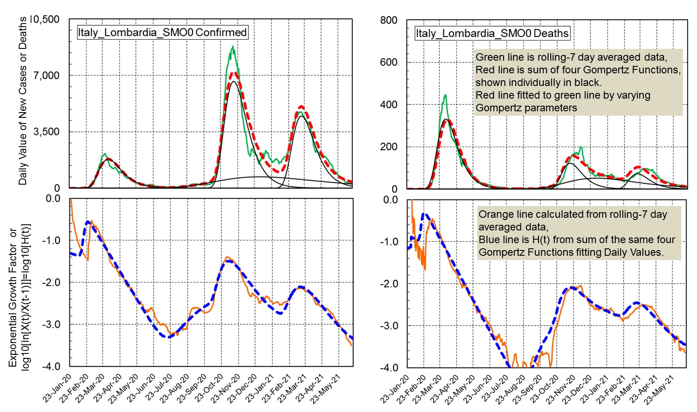
Deaths Gompertz Fitted to 5 waves
from TWEET: 2021:
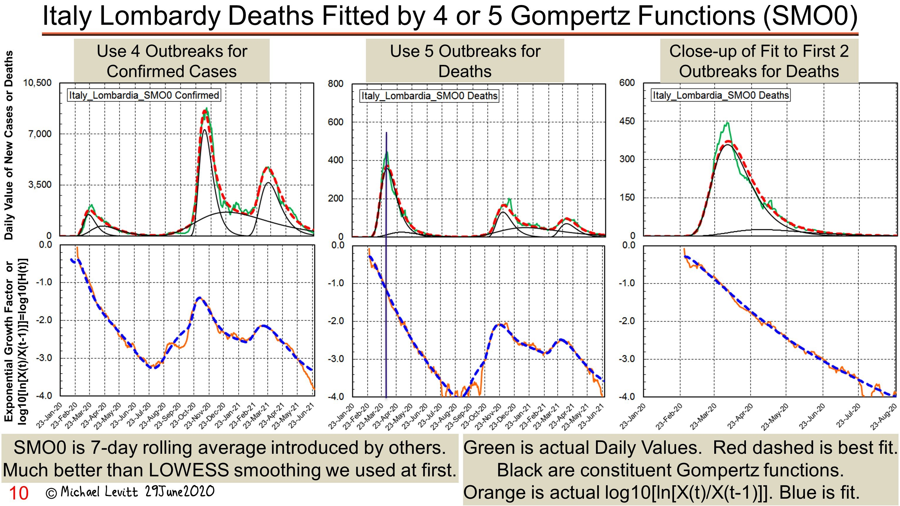FLORIDA and Method
11 August 2021
"Is more complete data from https://newsnodes.com/us_state/FL
reliable?
If so, it shows very good news for the latest COVID-19 wave in Florida.
The growth of cases follows Gompertz and daily cases will peek within 10 days.
Here is my graph. Data will follow.
The end is in sight!"
from TWEET: 11 Aug 2021
Removing Background Cases as a Fixed Daily Count
12 Aug: “Florida data from @NewsNodes given 5 days a week. Data from @JHUSystems once a week. Smoothing is important. Still the once-a-week post-weekend data points show a slowing down. NYT graphs similar but down-turn less obvious. Key is downward J(t) line typical of Gompertz.”
If this simple method to remove the back-ground as a fixed daily count works in other places, we will use it on automated forecasts of total cases given in http://levitt.herokuapp.com We are following all the US states with high daily case rates in an attempt to forecast the USA"
from TWEET: 12 AUGUST 2021 Above pic is also in this Tweet
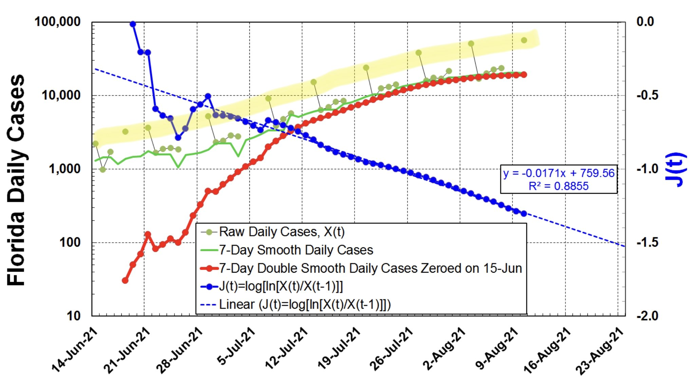13 Aug 2021: “Cool math for aficionados. The Excel fit to all J(t) has CC=0.94 & slope -0.0171. This gives U=25.4 days as U=1/(ln[10]*0.0171). Simple analysis shows daily counts peak when J(t) is -log10[exp[1/U]-1]=-1.406. This means peaking near 20-Aug-21. My thoughts with Florida!”
from TWEET: 13 Aug
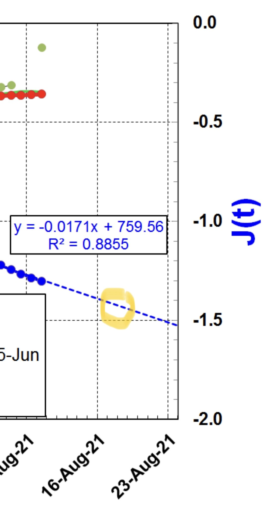USA FLORIDA ISRAEL 14 AUG 2021 (10 Aug)
14 Aug 2021: "Here is the promised Excel spreadsheet short link https://www.dropbox.com/s/mg3canauj7qgc1c/Latest_Wave_Gompertz_PASTE-IN-DATA.xlsx?dl=0 below link doesnt work (DropBox Link) with up-to-date analyses of current Delta Variant outbreaks in Florida, USA & Israel. For all, J(t) is dropping linearly as expected for the Gompertz growth seen almost universally for all outbreaks of COVID-19."
"Florida will peak very soon, USA a bit later & Israel in about 2 weeks. Same Excel can easily be used on any outbreak of cases or deaths." from TWEET: 14 Aug
Florida
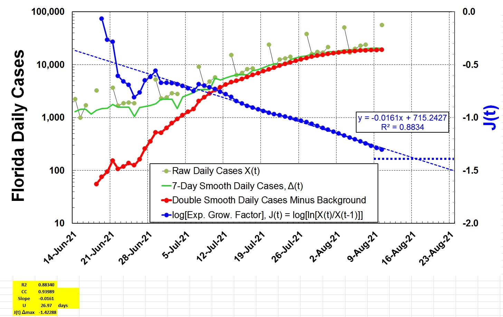
USA
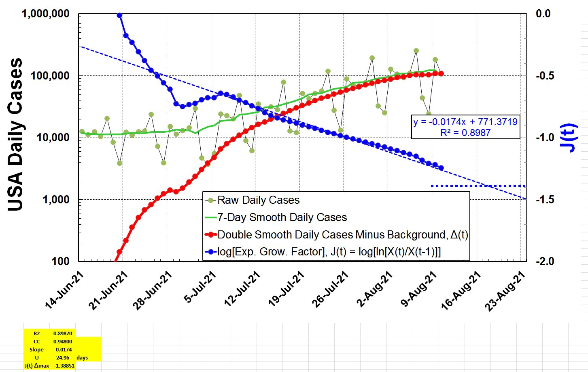
Israel
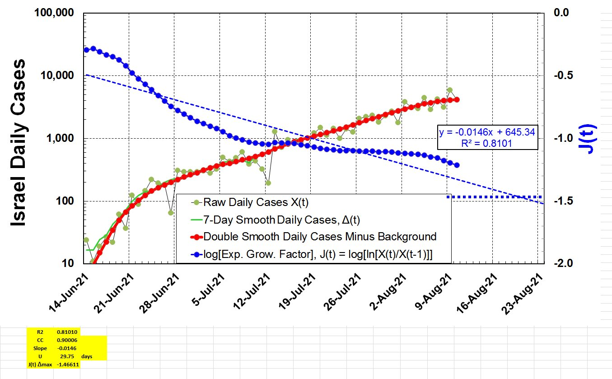USA FLORIDA ISRAEL 19 AUG 2021
19 Aug: "Update on Israel is less encouraging than the USA. The drop of Exponential Growth Factor (ln[H(t)]) slowed down for 5 weeks but is now dropping more rapidly. The J(t) value should reach target of -1.5 on 10-Sep-21 (orange lines & text). This means Daily Cases peak in 3 weeks."
from TWEET: Israel 19 Aug 2021
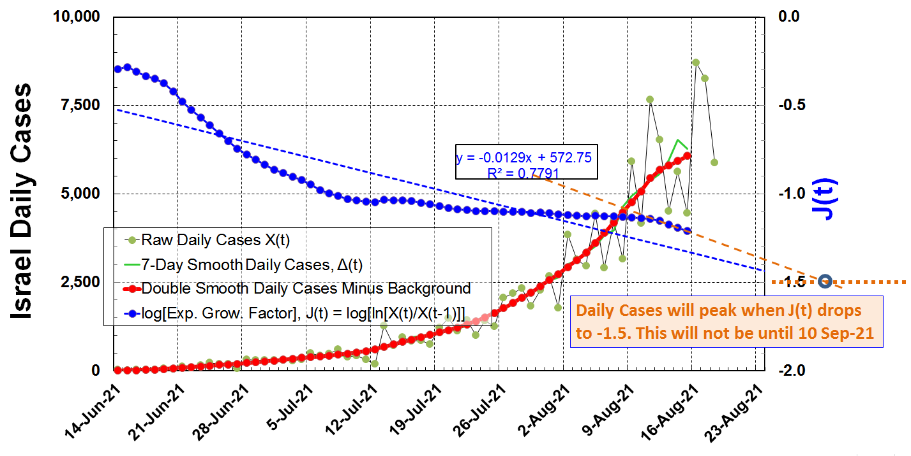19 Aug 2021: "Update on the USA. With 7-day smoothing, data is reliable to 16-Aug-21. Linear Extrapolation of J(t)=ln[H(t)] (blue short dashes), will get to target value of -1.4 in 5 days. This suggests that US reported COVID-19 Daily cases will peak on 21-Aug-21, which will be good news."
from TWEET: USA 19 Aug 2021
Florida
19 Aug 2021: “Florida COVID-19 cases has peaked. The Gompertz Prediction was close but a little late. The best fit line dropped a little bit quicker with U dropping from 27 days to 26.6 days. Plotting Daily Cases on a linear scale is best.”
from TWEET: 19 Aug 2021 Florida
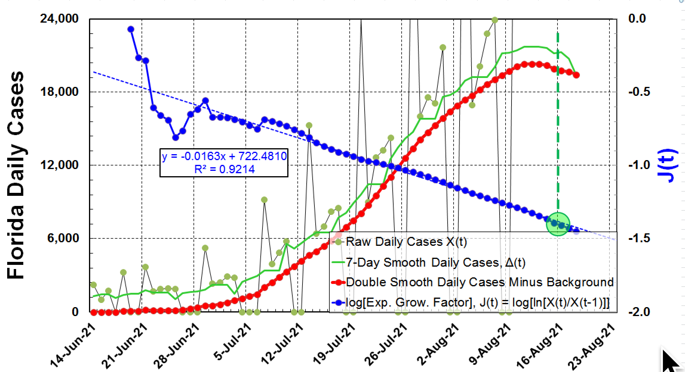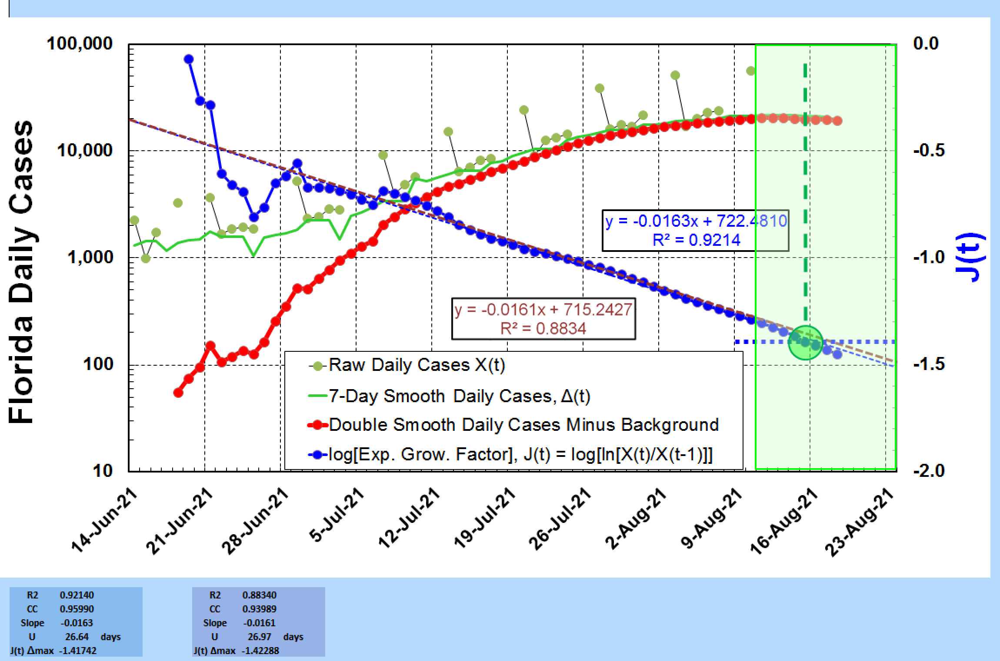
SOURCES
script for banner provided free by JavaScript Kit